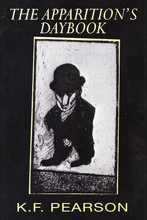

|
|


The Apparition's Daybook : K.F. Pearson
{kind=link}

{kind=link}
It is a delightful Puckish game Pearson plays... ...the verse will make a lasting impact on its readers... ...a book to be sipped like wine... | ||||||
Book Description
Come be the voyeur of my life,
see what I do, both by day and night
and we will, by desire alone,
invent the paths we walk along.
see what I do, both by day and night
and we will, by desire alone,
invent the paths we walk along.
K.F. Pearson’s fourth collection is exuberant departure from his earlier work. This book-length lyric sequence creates the equivocal inviting figure of the apparition. Precariously, he only exists when perceived.
No
shrinking ghost or pallied figment, the apparition, unapologetically
sexy, urbane and worldly wise, slips through the seams of the social
world. His is the voice of gaps and absences. He may be imageless in a
mirror but his wounded intelligence gives him dynamic and outline. His
spirit is provocative and his thought shapely. A wit Marvell would have
welcomed.
Susan Hancock - Easter Monday, 1996
A brilliant device... A teasing, cavalier game of negatives such as Beckett might have enjoyed.
Critical Survey (United Kingdom)
ISBN 0646240498
Published 1995
50 pgs
$19.95
Book Sample
|
FIRSTLY
STUDY HIS BROTHER SMOKE all the finesse of computer science, the eye of the portrait painter, the patience of Job, or the jobless, resiliance of the feral survivors, tricks of the political trade, the breathing rhythms of Tibetan monks, ability to change, and change your mind, a bent for scholarship, and like Thoreau, you will need to live deliberately. And when you know diagrams of smoke you’ll be prepared. Now look for me.
HIS SONG My body cannot appear unless someone is near. I am invisible. I lack corporeal self without a senser’s help. I am invisible. This mirror I consult has left my image out. I am invisible. I lie where no-one comes to my or nearby rooms. I am invisible. Here, what I cannot see creates no memory. I am invisible. Not an absence, but a lack: I am not, (unless you look). I am invisible. Or I am, but do not seem to be; as is your arm. I am invisible. No body could think to hold what is not in the world. I am invisible. Now, when asleep alone, or even when I dream, I am invisible. | HIS
METEOROLOGY
There is no recorded instance in the lore of an apparition holding an umbrella. The elements, it seems, will be against me. Thunder, lightning for dramatic backdrop, last century, were popular in our mythos; but fashion then was for the flowing cape. When we appear in visions, as at Lourdes, it’s noted, there is sunlight on a hill. And how will I appear in Melbourne rain? I require the will of someone else, so powerful for the need of single vision, I can step out, known, in the rain. HE
FAILS TO DINE
It’s only certain times when I’m apparent. At that bistro where we had a red and coffee it was obvious from the waiter with the goatee and thin gold earring in one ear I’d spent some time at his establishment one night. He said, ‘You haven’t dined. You should. You said you would.’ His recognition that I’d been around before was re-assuring to me who have my doubts that anyone should notice, in a glance, that I’m about, and more than that, that it would later on occur to who it was, to greet me like a friend, or one, at least, to urge commercially to dine. There are ways and ways of recognition, I’m afraid; and his was merely shadow of another I then knew. It was not long. It was two hours. I sat across from you and we talked time away, and not away; it stayed with me these last few days. It is almost intense, the feeling I had, those two hours, being a presence. HIS
AUBADE
You could be lying in, though not asleep, early morning extending into noon, your quietness distance from a telephone. Sheltered briefly from
your week,
where all you had to do was move, or not to move,depending how your satisfaction felt, or whether your companion was awake, or what you
languidly thought of;
it would be a time without compulsion,sunlight only strenuous on glass. If you were a clown you’d get the laughs, your limbs and mind so
easy then.
‘With nothing on, nor on your mind,’ you’d breathe lettuce-crispy air, alert and lazy. You’d think it was the only way to be; and you could leave, or later leave. |
Reviews
The Apparition's Daybook
Matt Simpson
Critical Survey (UK), Vol. 10, No. 1 1998
I
approach K.F. Pearson’s
The Apparition’s Daybook with
some
suspicion after reading the blurb. The quatrain printed there did not
augur well:
nor the fact that the book is dedicated to the person who is quoted recommending it with ‘A wit Marvell would have welcomed’. The further discovery that Kevin Pearson and Gail Hannah who designed the cover are in fact the publishers did not help. To risk a pun, I was dispirited.
But I was deceived. This is in fact a very engaging collection or, more precisely, it is what Australians call a suite of poems, one which subverts cognito, ergo sum to I am, but you don’t think. It invites its readers into a wittily and cleverly sustained metaphorical world of being/not being, in which insubstantiality is made palpable in a series of soliloquies. These are uttered by a ghost, the apparition of the title, who plays a teasing, cavalier game of negatives such as Beckett or W.S. Graham might have enjoyed. This is defamiliarisation with a vengeance. The sense of non-being paradoxically creates an exquisite awareness of being, so that, in the end, one is able to read the poems, for all their playful, dandified literariness and intertextuality (the range of forms deployed, the seventeenth-century anthology titles His Aubade, His Rival, His Prohibition etc.) at least on one level as love poems.
The Apparition’s soliloquies are themselves haunted by ghosts: the ghosts of literary forms (sonnets, villanelles, epigrams etc.) and those of Aubrey, Waller, Traherne, Marlowe, Raleigh, and the madrigalist Thomas Bateson. I also get a sense, rightly or wrongly, of Ted Hughes’s Crow perched somewhere overhead.
It is a brilliant device. There are freedoms ghosts can exercise that are denied to mortals. They can observe without being observed, speak without being heard (except paradoxically when we read their one-way-mirror poems); they can enjoy (and suffer) separation; and they can be in time without being of it, even if, as these poems continually insist, they are dependent upon the existence of others’ perceptions for their existence or only come into existence in the act of naming:
It is a delightful Puckish game Pearson plays. It would be interesting to see his three previous collections.
The Apparitions Daybook
Elizabeth Winfield
Famous Reporter, No.15 - 1997
K.F. Pearson’s The Apparition’s Daybook is a book to be sipped like wine. The tone is a dry red. There comes a time in life when ‘Your chimera will doubt its own dimensions.’ If a child makes a fish from clay, treasures it, then gives it to you, would you paint a tear beneath its eye for joy or sorrow? This is a book for asking questions of what makes life more than an apparition. The poet’s role is as messenger, the truth-teller, like the angels of times past (‘His Family Tree’). ‘Come be the voyeur of my life, / see what I do, both day and night / and we will, by desire alone, / invent the paths we walk along.’ ‘We see the wind when leaves move on a tree.’ Perhaps we are only more than apparitions when reflected / recognised by ‘significant eyes’. The gentleness of metre and rhyme are like the caress of a murmering brook. ‘To reach across / and touch a face / suffused with light / was just a thought. / I’m conscious now. / I think unseen’. A book that lingers like longing.
A Sort of Liberation - The Apparition’s Daybook
David McCooey (author)
Australian Book Review, No. 186, 1996
Poetry often seems to be about collapsing apparitions, haunting moments. These books [Shane McCauley, Shadow Behind the Heart, David Rowbotham, The Ebony Gates: New and Wayside Poems, K.F. Pearson, The Apparition’s Daybook] are largely about shadows, apparitions, and the inglorious dead...
A different shadow (or is it?) is at the heart of what is, for me, the most sustained and interesting work in this group of books: K.F. Pearson’s The Apparition’s Daybook. As with the earlier The History of Colour there is a variety of rhyme and stanza form used, but this work has a unified purpose, centring on that shadowy figure, the apparition, who doesn’t exist unless perceived.
Pearson is a fine rhetorician, employing various linguistic sleights of hand: the pun, zeugma and so on. The first poem tells us to ‘first study his brother smoke’: ‘To map the ways of smoke you’ll need / ...the patience of Job or the jobless’. But Pearson is more than just a trickster. These poems tease away at the mind, but they have a lightness which is the lightness of smoke, not hot air. Like Marlow’s tale in Heart of Darkness, meaning here is not a nut in its shell to be cracked open, but rather the light which allows the smoke to be seen, ‘as a glow brings out a haze’.
The world of the apparition is that of the café, the restaurant, the bed and other sites of urbanity. (‘Daybook’ means not only diary but also has the mercantile meaning of a sales book. These poems, then, suggest the shadow’s transactions with the real world.) The most sustained pun is with spirits, the kind one drinks. In ‘He Has a Gin and Tonic’ the obligatory mirror behind the bar appears not to reflect the poet and his friend (a photographer) until they realize that in fact there is a real mirror-image bar behind the bar they are in, a kind of drinker’s through-the-looking-glass nightmare. In ‘His Cocktail Cabinet’ all the spirits look like water - gin, vodka, ouzo, white Sambuca, vermouth - which in turn look like glass. The apparition’s affinity is made clear in ‘His Virtue’: ‘I have a close affinity with glass; / fragile, of course, and it can be seen through’.
However, it is not simply a matter of seeing through this poem-sequence. The significance of the apparition is far from simple. The apparition could - as in Kevin Hart’s Your Shadow - be a memento mori, artfully figuring mortality. Or it could be an image of the poet’s craft itself. Poems, like apparitions, are moments we must glimpse to bring into being. This seems all the more apposite when one considers the parodic, intertextual nature of the sequence. The collection is literally haunted by the apparitions of others: Traherne, ‘The Passionate Shepherd’ , Stevens’ ‘The Emperor of Ice-Cream’ and so on. These uncanny moments in which we intuit the apparition are the dream-like moments necessary for poetry: ‘for as you saw the shadow cast its shape, / your big imagination gave a leap. / Shadow, or him, or figment of desire, / salute the thing that brought the shadow there’. The reference to desire and sex and the inescapable references to death suggest that shadows and poetry are things which point to that moment which is either a moment of loss or ‘a sort of liberation’.
The Apparition’s Daybook
Lisa Catherine Ehrich
Social Alternatives, Vol. 15, No.4, 1996
The Apparition’s Daybook is a refreshing, original, sometimes witty, but most of all very touching anthology of verse. As the title implies, the protagonist is none other than an apparition: a ghost or non-entity who desperately seeks to re-experience the delights of love, intimacy, and humanly reaching.
The apparition is an instantly likeable being. He is intelligent, sensitive and misunderstood. His vulnerability is aroused in several of the poems that speak of his loneliness. In ‘His Song’ he describes his inescapable condition; he is invisible to all except those who are willing to acknowledge that he exists. Two key lines are:
The sad and sorry situation is that the apparition’s attempts of being-with-others are thwarted at every turn. ‘His Song’ reminds us that it is through authentic relationships that it is possible to come to know and define who we are. The theme of needing another in order that he can be is echoed in several other poems (eg. ‘His Epitaph’, ‘The Politics of Appearance’; ‘His Fairy Tale’). For the apparition, however, he is powerless (‘The Slides of his Trip’), dismissed (‘His Social Style’), forgotten (‘A Viewer Scorns Him in the Words of Spanish Poet, Pedro Salinas’), unable to use inclusive language like ‘we’ and ‘us’ (‘His Prohibition’), and above all, lonely (‘To an Answering Machine’; ‘In Broad Day’). The apparition longs for human contact and this is underscored in ‘Occasions of Eyes’. The fourth stanza says:
The final poem, ‘Exit’ whispers of a flickering of hope for an interlude:
In ‘One thing’ the apparition wishes to be seen by a particular person. He is ready and waiting for a sign. One cannot help but hope it comes soon.
Although a great deal of K.F. Pearson’s poems speak of the solitude and pain of non-being, he manages to interject several animated and witty poems in this anthology. For example, in ‘He refuses Tickets to Phantom of the Opera’, the apparition prefers the state of non-existence to the option of attending Lloyd Webber’s Phantom. In his view, the music is boring. (One would have thought the apparition may have been comforted by a story about a fellow phantom, ostracised by society and in need of love!). The other poem I found humorous was ‘His Meteorology’ which highlighted the practical problems of being an apparition living in rainy Melbourne. ‘He has a gin and tonic’ is another light hearted look at ghostly (non) existence.
The power of K.F. Pearson’s verse is its ability to evoke both tenderness and pathos. His work reveals a deep and sophisticated insight into the human condition and this is reflected in the apparition’s quest for authenticity in human relationships. In summary, I would have no hesitation in recommending Pearson’s The Apparition’s Daybook. Unlike the nature of apparitions, the verse will make a lasting impact on its readers.
Come be the voyeur
of my life,
see what I do, both by day and night
and we will, by desire alone,
invent the paths we walk along.
see what I do, both by day and night
and we will, by desire alone,
invent the paths we walk along.
nor the fact that the book is dedicated to the person who is quoted recommending it with ‘A wit Marvell would have welcomed’. The further discovery that Kevin Pearson and Gail Hannah who designed the cover are in fact the publishers did not help. To risk a pun, I was dispirited.
But I was deceived. This is in fact a very engaging collection or, more precisely, it is what Australians call a suite of poems, one which subverts cognito, ergo sum to I am, but you don’t think. It invites its readers into a wittily and cleverly sustained metaphorical world of being/not being, in which insubstantiality is made palpable in a series of soliloquies. These are uttered by a ghost, the apparition of the title, who plays a teasing, cavalier game of negatives such as Beckett or W.S. Graham might have enjoyed. This is defamiliarisation with a vengeance. The sense of non-being paradoxically creates an exquisite awareness of being, so that, in the end, one is able to read the poems, for all their playful, dandified literariness and intertextuality (the range of forms deployed, the seventeenth-century anthology titles His Aubade, His Rival, His Prohibition etc.) at least on one level as love poems.
The Apparition’s soliloquies are themselves haunted by ghosts: the ghosts of literary forms (sonnets, villanelles, epigrams etc.) and those of Aubrey, Waller, Traherne, Marlowe, Raleigh, and the madrigalist Thomas Bateson. I also get a sense, rightly or wrongly, of Ted Hughes’s Crow perched somewhere overhead.
It is a brilliant device. There are freedoms ghosts can exercise that are denied to mortals. They can observe without being observed, speak without being heard (except paradoxically when we read their one-way-mirror poems); they can enjoy (and suffer) separation; and they can be in time without being of it, even if, as these poems continually insist, they are dependent upon the existence of others’ perceptions for their existence or only come into existence in the act of naming:
But, like the name
of god that can’t be said
in certain religious
persuasions, I endure a censorship
I can’t say ‘we’, or ‘us’.
in certain religious
persuasions, I endure a censorship
I can’t say ‘we’, or ‘us’.
It is a delightful Puckish game Pearson plays. It would be interesting to see his three previous collections.
The Apparitions Daybook
Elizabeth Winfield
Famous Reporter, No.15 - 1997
K.F. Pearson’s The Apparition’s Daybook is a book to be sipped like wine. The tone is a dry red. There comes a time in life when ‘Your chimera will doubt its own dimensions.’ If a child makes a fish from clay, treasures it, then gives it to you, would you paint a tear beneath its eye for joy or sorrow? This is a book for asking questions of what makes life more than an apparition. The poet’s role is as messenger, the truth-teller, like the angels of times past (‘His Family Tree’). ‘Come be the voyeur of my life, / see what I do, both day and night / and we will, by desire alone, / invent the paths we walk along.’ ‘We see the wind when leaves move on a tree.’ Perhaps we are only more than apparitions when reflected / recognised by ‘significant eyes’. The gentleness of metre and rhyme are like the caress of a murmering brook. ‘To reach across / and touch a face / suffused with light / was just a thought. / I’m conscious now. / I think unseen’. A book that lingers like longing.
A Sort of Liberation - The Apparition’s Daybook
David McCooey (author)
Australian Book Review, No. 186, 1996
Poetry often seems to be about collapsing apparitions, haunting moments. These books [Shane McCauley, Shadow Behind the Heart, David Rowbotham, The Ebony Gates: New and Wayside Poems, K.F. Pearson, The Apparition’s Daybook] are largely about shadows, apparitions, and the inglorious dead...
A different shadow (or is it?) is at the heart of what is, for me, the most sustained and interesting work in this group of books: K.F. Pearson’s The Apparition’s Daybook. As with the earlier The History of Colour there is a variety of rhyme and stanza form used, but this work has a unified purpose, centring on that shadowy figure, the apparition, who doesn’t exist unless perceived.
Pearson is a fine rhetorician, employing various linguistic sleights of hand: the pun, zeugma and so on. The first poem tells us to ‘first study his brother smoke’: ‘To map the ways of smoke you’ll need / ...the patience of Job or the jobless’. But Pearson is more than just a trickster. These poems tease away at the mind, but they have a lightness which is the lightness of smoke, not hot air. Like Marlow’s tale in Heart of Darkness, meaning here is not a nut in its shell to be cracked open, but rather the light which allows the smoke to be seen, ‘as a glow brings out a haze’.
The world of the apparition is that of the café, the restaurant, the bed and other sites of urbanity. (‘Daybook’ means not only diary but also has the mercantile meaning of a sales book. These poems, then, suggest the shadow’s transactions with the real world.) The most sustained pun is with spirits, the kind one drinks. In ‘He Has a Gin and Tonic’ the obligatory mirror behind the bar appears not to reflect the poet and his friend (a photographer) until they realize that in fact there is a real mirror-image bar behind the bar they are in, a kind of drinker’s through-the-looking-glass nightmare. In ‘His Cocktail Cabinet’ all the spirits look like water - gin, vodka, ouzo, white Sambuca, vermouth - which in turn look like glass. The apparition’s affinity is made clear in ‘His Virtue’: ‘I have a close affinity with glass; / fragile, of course, and it can be seen through’.
However, it is not simply a matter of seeing through this poem-sequence. The significance of the apparition is far from simple. The apparition could - as in Kevin Hart’s Your Shadow - be a memento mori, artfully figuring mortality. Or it could be an image of the poet’s craft itself. Poems, like apparitions, are moments we must glimpse to bring into being. This seems all the more apposite when one considers the parodic, intertextual nature of the sequence. The collection is literally haunted by the apparitions of others: Traherne, ‘The Passionate Shepherd’ , Stevens’ ‘The Emperor of Ice-Cream’ and so on. These uncanny moments in which we intuit the apparition are the dream-like moments necessary for poetry: ‘for as you saw the shadow cast its shape, / your big imagination gave a leap. / Shadow, or him, or figment of desire, / salute the thing that brought the shadow there’. The reference to desire and sex and the inescapable references to death suggest that shadows and poetry are things which point to that moment which is either a moment of loss or ‘a sort of liberation’.
The Apparition’s Daybook
Lisa Catherine Ehrich
Social Alternatives, Vol. 15, No.4, 1996
The Apparition’s Daybook is a refreshing, original, sometimes witty, but most of all very touching anthology of verse. As the title implies, the protagonist is none other than an apparition: a ghost or non-entity who desperately seeks to re-experience the delights of love, intimacy, and humanly reaching.
The apparition is an instantly likeable being. He is intelligent, sensitive and misunderstood. His vulnerability is aroused in several of the poems that speak of his loneliness. In ‘His Song’ he describes his inescapable condition; he is invisible to all except those who are willing to acknowledge that he exists. Two key lines are:
No
body could think to hold
what is not in the world
(pg. 2)
what is not in the world
(pg. 2)
The sad and sorry situation is that the apparition’s attempts of being-with-others are thwarted at every turn. ‘His Song’ reminds us that it is through authentic relationships that it is possible to come to know and define who we are. The theme of needing another in order that he can be is echoed in several other poems (eg. ‘His Epitaph’, ‘The Politics of Appearance’; ‘His Fairy Tale’). For the apparition, however, he is powerless (‘The Slides of his Trip’), dismissed (‘His Social Style’), forgotten (‘A Viewer Scorns Him in the Words of Spanish Poet, Pedro Salinas’), unable to use inclusive language like ‘we’ and ‘us’ (‘His Prohibition’), and above all, lonely (‘To an Answering Machine’; ‘In Broad Day’). The apparition longs for human contact and this is underscored in ‘Occasions of Eyes’. The fourth stanza says:
but
now, in the meantime, our short present tense,
significant eyes, which a moment take ours,
pleasure our days, and reduce us to tears.
Today, when I look may I meet with a glance
(pg. 45)
significant eyes, which a moment take ours,
pleasure our days, and reduce us to tears.
Today, when I look may I meet with a glance
(pg. 45)
The final poem, ‘Exit’ whispers of a flickering of hope for an interlude:
My
welcome short
I’ll make my flight.
But give your word
And I’ll abide
(pg. 50)
I’ll make my flight.
But give your word
And I’ll abide
(pg. 50)
In ‘One thing’ the apparition wishes to be seen by a particular person. He is ready and waiting for a sign. One cannot help but hope it comes soon.
Although a great deal of K.F. Pearson’s poems speak of the solitude and pain of non-being, he manages to interject several animated and witty poems in this anthology. For example, in ‘He refuses Tickets to Phantom of the Opera’, the apparition prefers the state of non-existence to the option of attending Lloyd Webber’s Phantom. In his view, the music is boring. (One would have thought the apparition may have been comforted by a story about a fellow phantom, ostracised by society and in need of love!). The other poem I found humorous was ‘His Meteorology’ which highlighted the practical problems of being an apparition living in rainy Melbourne. ‘He has a gin and tonic’ is another light hearted look at ghostly (non) existence.
The power of K.F. Pearson’s verse is its ability to evoke both tenderness and pathos. His work reveals a deep and sophisticated insight into the human condition and this is reflected in the apparition’s quest for authenticity in human relationships. In summary, I would have no hesitation in recommending Pearson’s The Apparition’s Daybook. Unlike the nature of apparitions, the verse will make a lasting impact on its readers.